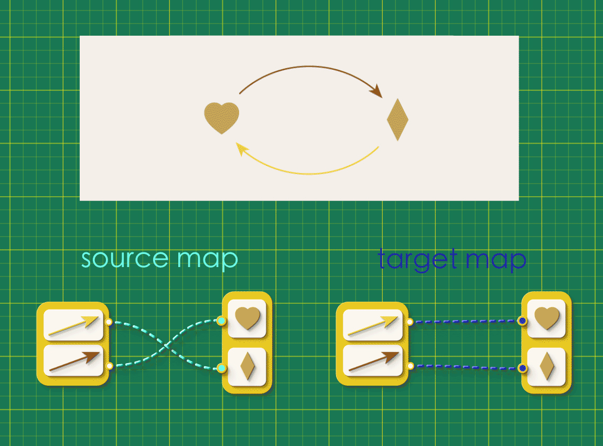
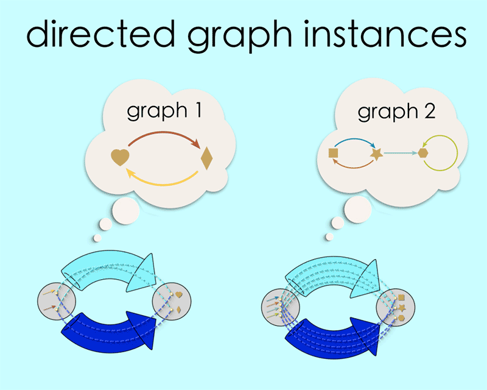
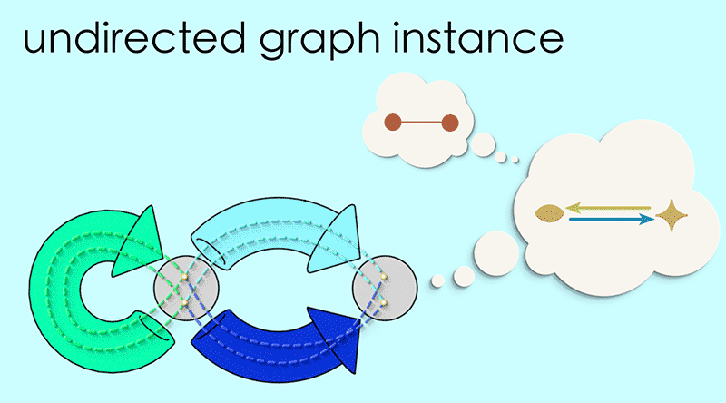
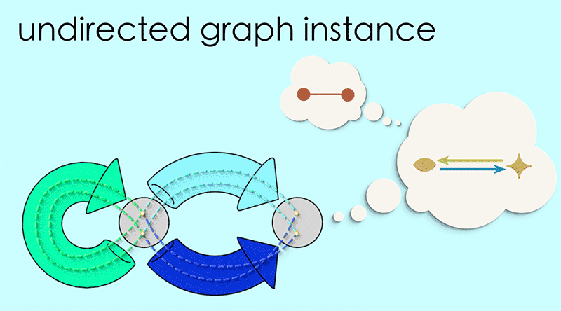
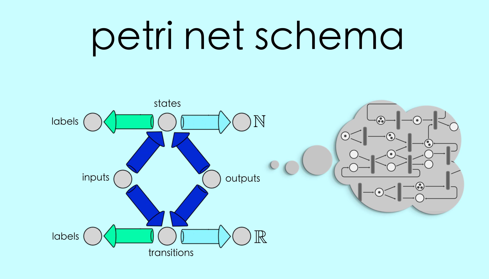

Chapter 3: Schemas#

In the last chapter we saw how graph morphisms could be explored in Algebraic Julia. The details were, admittedly, a bit complicated and perhaps somewhat visually overwhelming. In this chapter we’re going to do some much needed tidying up with our abstraction. But what will begin as a routine matter of housekeeping will, in fact, set us up to think about graphs in a more general and flexible way.
Introducing Schemas for directed graphs#
The basic building block we’ve been working with so far is a map, a bundle of connections in which every item on one side gets connected to some item on the other. For example:

We’re now going to introduce a new abstraction that hides all of this detail. We’re going to:
wrap these connections in one big tube
put an arrow point on this tube so we can remember which direction the connections were going
wrap the items at either end in labelled spheres
and forget all about those underlying details!

A big chunky arrow like this is easier to draw and easier to think about. Whenever we see one we can take for granted that there is some specific set of connections bundled up “under the hood.” This is just like in an algebra equation where, when we see the variable ‘x’, we know it stands for some specific number. Chunky arrows are like variables for maps.
Figures built from these chunky arrows are known as schemas. In moving from an explicit map to its schema, we are moving from rung 2 (“data”) to rung 3 (“blueprints”) on our ladder of abstractions.
What is the schema that represents a directed graph? Recall that a directed graph is defined by two maps, both of which connect the same collections of arrows and vertices.
{kind=link}
Instead of representing these maps side by side like this, let’s combine them so that they run in parallel. Our chunky arrows will then be in this configuration:

A pair of parallel source and taget maps is the underlying pattern that is common to all directed graphs, their essential “blueprint”. We generally draw this as two arrows marked src and tgt.

Any particular pair of maps between the same arrows and vertices is said to be an “instance” of this schema. By filling in the schema in different ways we create different instances, and every instance corresponds to some directed graph.
{kind=link}
In Chapter 3 we saw how to represent a graph morphisms between these two graphs with the following pattern of maps:

The schema for this data looks like this:
WAIT…//graph morphism schema
But recall that there was an extra “loop condition” that the maps needed to satisfy in order to represent a proper graph morphism:

Note how the top of this square contains the schema for Graph 1, the bottom is the schema for graph 2, and the overall square schema represents a morphism of graph 1 into graph 2 if and only if these maps satisfy the closed loop condition.
For our schema, we will impose this closed loop condition by writing it as an equation. We can describe the two paths around the schema in writing by listing the sequence of chunky arrows along each path, S2•A for the lower route and V•S1 for the upper route.

(Note how the order in which we write the arrows seems backwards from the order in which you would actually traverse those arrows along the route. Unfortunately this is the notational convention! One way to think of it is to read the symbol • as the word “after.” So “V•S2” is understood to mean “V after S2.”) We express our closed loop condition by saying that these two paths must be equal, and we write this equation next to our schema.
//commutativity condition with schema
Any way of filling in this schema that satisfies the commutativity constraint can be interpreted as a morphism between graphs.
///GIF of graph morphism instance
The upper part of the diagram describes a graph. The lower part of the diagram describes another. And any pair of vertical arrows that satisfy the commutativity constraint describe a way of morphing the first graph into the second.
The data of a schema includes both the pattern of arrows and this equation. The arrows show us the pattern of maps which may form an instance. The equation provides and additional constraint on which collections of maps can be considered valid instances of the schema.
We understand this to mean that, first of all, any instance of this schema consists of a bunch of maps “under the hood” which are arranged in the pattern. But additionally, we have a guarantee that if we inspect those maps we will find a closed loops, of the sort characterized by the equation. Any ways of filling in the schema that do not satisfy the commutativity constraint are not considered valid instances of this schema.
Point out that Schemas ARE directed graphs.
We have thus taken a geometric idea - the condition that certain loops must all be closed - and have found a way to represent it as an equation. And one nice thing about equations is that they can be easily communicated to a computer! Indeed, if you go back to the last chapter you see that we have Note on using directed graph notation to define schemas, and then expressing your commutativity conditions as constraints on those arrows. (much like adding data like state and update rule). //sample code for We have seen that it is possible to express the geometric idea of graph morphisms in terms of a commutativity constraint on a schema. But this isn’t the only thing that can be expressed this way. A surprising and lovely fact of life is that an enormous number of ideas can be captured using schemas and constraints. Let’s look at some other examples.
Reflexive Graphs#
Suppose we were making a directed graph to represent the game of tic tac toe, where:
Vertices are the states of the game
Arrows are “moves” of the game, going from one state to another.
A piece of our graph would look like this:

Now let’s imagine doing the same thing for the ancient board game Go. An important thing to know about this game is that the player always has the option to “pass.” That is, one of the available moves at any given turn is to stay in the current state. Thus, every vertex in this graph is going to have one arrow that loops back on it.

Often, when we’re modeling with directed graphs, we’ll find ourselves in such a situation; where every vertex needs to have a special looped arrow attached to it. It happens so frequently that we give these graphs a special name - they’re called “Reflexive Graphs.”
By definition, in a reflexive graph, every vertex has a special self-looping arrow. We can express this as a map, with connections going from each vertex to its corresponding self-loop.

We can attach this map to our directed graphs schema. (Notice that it goes in the opposite direction from our source and target maps!)

Now think about the following sentence:
“Every vertex is the source and target of its self-looping arrow.”
On the one hand, this is effectively the definition of a reflexive graph. On the other hand, we can easily translate this sentence into a closed loop condition on the above maps.
In words:
“If we start from any vertex and follow the reflexive map and then either the source or target maps from there, we should always wind up at the back where we started.”
As an equation:

That is, a directed graph can be considered a reflexive graph if and only if there exists a map “ref” such that it forms a set of loops with the existing maps in the directed graph schema. Thus, to work with reflexive graphs in Algebraic Julia we think of them as special cases of direct graphs and specify to the program that we want it to restrict itself to directed graphs for which such a reflexive map exists.
//code snippet showing reflexive graph definition.
Reflexive graphs are widespread and useful. In applied settings they are excellent for geometric applications. Reflexive relationships are prevalent in mathematics (divisibility among the integers, subsets among sets, etc.). And in category theory all structures of interest (preorders, categories, etc.) are reflexive graphs. But for our purposes, reflexive graphs are important because it’s interesting to try and count the morphisms between two of them!
…where the way we define our graph is by starting with all directed graphs and then specialize to only those which can satisfy the commutativity condition. If we were programming in terms of “things” we’d have to add to our codebase to We think of reflexive graphs as special cases of directed graphs. Therefore any operations that are defined for directed graphs specialize to reflexive graphs as a subset.
Undirected Graphs#
Suppose we were making a directed graph to represent the social network on Tiktok:Vertices are peopleArrows are “follows”, going from a person to someone they follow.A piece of our graph would look like this:

Note that TikTok follows are directional; a person who you follow may not follow you back.
Now let’s imagine doing the same thing for connections on LinkedIn. In this social network, both parties must mutually agree to the connection. So a LinkedIn connection is symmetric, not directional. To model this kind of social network we need a different kind of graph. We call these “undirected graphs” and, as the name surely suggests, these are like directed graphs but with non-directional edges connecting the vertices instead of arrows.

Surprisingly, we can think of undirected graphs as special cases of directed graphs.
An arrow in a directed graph is like a one-way street, a unidirectional pointer from its source to its target. An edge in an undirected graph is more like like a two-way street, which the connection goes mutually in both directions. If we take this “two-way street” idea literally we can see that every undirected graph is equivalent to a directed graph with pairs of arrows in place of each edge.


 

{kind=link}
And in the next chapter we will focus on examples using undirected graphs instead of directed graphs. They’re a little simpler to draw and think about, and are perfectly useful for telling the rest of our story.
Other kinds of schemas#
In this chapter we have used schema constraints to look at a few different flavors of graphs. Graphs are relatively simple and that’s why we chose to focus on them. It is easier to grasp the concept of a schema when the thing the schema represents is straightforward to understand, which graphs are.But the framework we have developed here can actually be extended beyond just graphs, to an extraordinary variety of elaborate and useful concepts. Indeed, one of the profound offerings of Algebraic Julia is the sheer number of mathematical abstractions it can handle in terms of schemas and constraints. In this final section we offer a brief glimpse at some more powerful models and ideas that are also captured by this framework.
Disclaimer:It is out of scope to go into any detail on the following schemas. We mention them here, in passing, only to give some sense of the possibilities with Algebraic Julia.
Simplicial sets#
We can generalize reflexive graphs to higher dimensions using schemas. The result is one of the algebraic topologist’s favorite tools: simplicial sets. Ordinary graphs connect 0-dimensional vertices using 1-dimensional lines. With simplicial sets we can also attach 2-dimensional triangles, building up triangulated surfaces. Going up another dimension we can attach 3-dimensional tetrahedra to make solid figures. And so on.
For the mathematician, simplicial sets are useful because they turn geometry into algebra: a simplicial triangulation of a topological space is a combinatorial object that can be reasoned about. For the applied scientist, simplicial sets may be useful as a way of 3D modeling, as we’ll see in Chapter 7. Finally, in Algebraic Julia, simplicial sets are practical because all of the rules for how different parts must attach can be fully captured with a few compositionality constraints.

Petri nets#
On the more “applied” side, we have the example of Petri nets, a sophisticated modeling system for the analysis of concurrent systems. It was developed by German computer scientist Carl Adam Petri in the 1960’s, whose goal was to provide a system that could model parallel processes, synchronization, resource sharing, and which had an intuitive graphical notation. Petri nets provide a modeling tool that is suitable for a wide variety of systems, from chemical reactions to business management logistics.It’s important to note that Petri nets were developed by practitioners, not mathematicians. It was born from necessity, designed to fill a utility gap in existing systems. But because Carl Petri gave the system an exact mathematical definition for its execution semantics, we are able to represent petri nets in terms of schemas and work with them in Algebraic Julia.
{kind=link}
Databases#
Algebraic Julia’s implementation of Petri nets is called AlgebraicPetri.js. Documentation can be found here along with several examples of scientific models using Petri nets, including population dynamics, epidemiological models and enzyme reactions.
Databases?:
Conclusion*** That “embedding” might seem a little useless/artificial/formal. In the next section we develop tools that*** That the tool we develop in the final section: “Double Pushout Rewriting” can be applied to all of the “special” examples above.